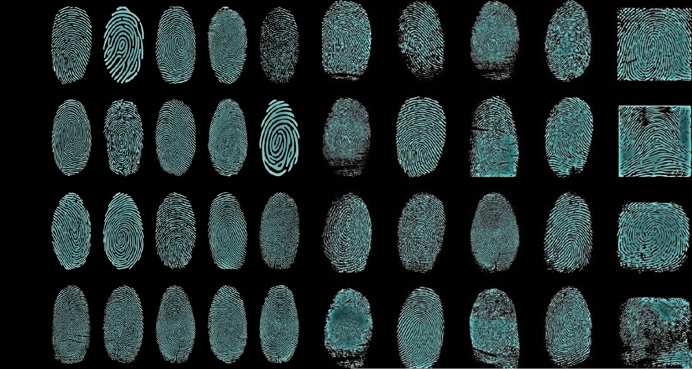

Fingerprints

A fingerprint is an impression left by the friction ridges of a human finger. The recovery of partial fingerprints from a crime scene is an important method of forensic science. Moisture and grease on a finger result in fingerprints on surfaces such as glass or metal. Deliberate impressions of entire fingerprints can be obtained by ink or other substances transferred from the peaks of friction ridges on the skin to a smooth surface such as paper. Fingerprint records normally contain impressions from the pad on the last joint of fingers and thumbs, though fingerprint cards also typically record portions of lower joint areas of the fingers.